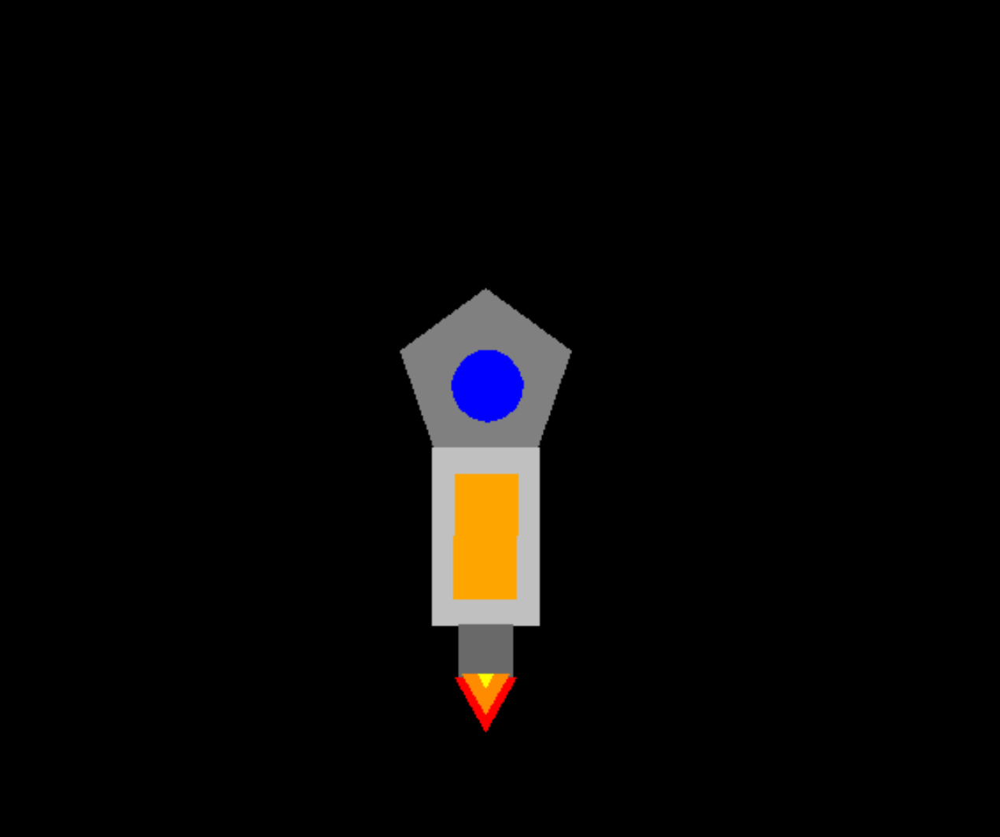

This is Alan Coronado's Home Page!!!
This is my home away from home:

For this project which was the first one we did for the course we wanted to create something that was unique and showed off our ability in the use of python turtle movement commands. So for that reason we created this rocket ship that goes around the canvas flying around, even though it may be simple for our first project it was somewhat of a challenge but at the end we were able to overcome the challenge at the end.
For this project we had to use this website called scratch which allows for the user to program and code through block coding which is a lot more convenient for people or in our case students who are newer to computere programming and overall coding a project. I personally had used scrath a few years before in middle school and I found it very efficient considering that it is very helpful for new people as they are given these block codes that allow for the person to see the whole spectrum of movement commands as well as different types of animations without actually knowing a sophisticated coding language.

"This is where I am from"